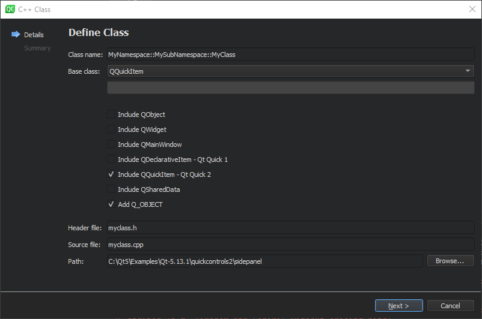

Add wizards
Qt Creator has wizards for adding classes, files, and projects that you can copy and edit to create your own wizards. Create the wizard directory in the templates/wizards/ directory in your user settings directory.

To create a new wizard:
- Start Qt Creator with the
-customwizard-verboseargument to receive feedback during wizard development. For more information, see Verbose Output. - Set keyboard shortcuts for the Inspect and Factory.Reset actions, as described in Tips for Wizard Development.
- Copy a directory that contains a wizard and rename it. For example, copy
share/qtcreator/templates/wizards/classes/cppas$HOME/.config/QtProject/qtcreator/templates/wizards/classes/mycpp. - Use the Factory.Reset action to make the wizard appear in File > New File without restarting Qt Creator.
- Open the wizard configuration file,
wizard.jsonfor editing, as described in Custom Wizards. - Change the
idto something unique. Wizards are sorted by the ID in alphabetic order within acategory. You can use a leading letter to specify the position of the wizard. For example,B.MyClass.
See also Custom Wizards and Find settings files.